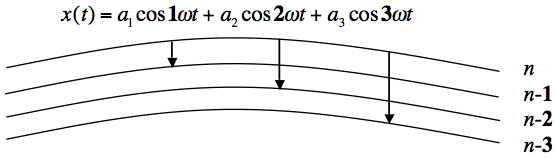
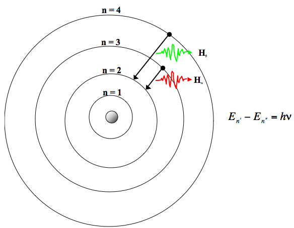
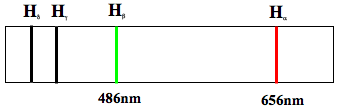

Bohr’s Correspondence Principle
Regarding Bohr’s correspondence principle, the historian of physics Max Jammer writes, “[T]here was rarely in the history of physics a comprehensive theory which owed so much to one principle as quantum mechanics owed to Bohr’s correspondence principle” (Jammer 1966, p. 118). The correspondence principle not only played a pivotal role in the discovery of quantum mechanics but was also the cornerstone of Bohr’s philosophical interpretation of quantum mechanics, being closely tied to his better known thesis of complementarity and to the Copenhagen interpretation.
Although the importance of Bohr’s correspondence principle is largely undisputed, there is far less agreement concerning how the correspondence principle should be defined. It is important to distinguish between Bohr’s own understanding of this principle and what it came to mean for the larger physics community. Even if one restricts oneself to Bohr’s writings, however, there is still a disagreement among Bohr scholars regarding precisely which of the several relations between classical and quantum mechanics that Bohr discovered should be designated as the correspondence principle. There are three primary candidate-definitions in the literature. First, there is the frequency interpretation, according to which the correspondence principle is a statistical asymptotic agreement between one component in the Fourier decomposition of the classical frequency and the quantum frequency in the limit of large quantum numbers. Second, there is the intensity interpretation according to which it is a statistical agreement in the limit of large quantum numbers between the quantum intensity, understood in terms of the probability of a quantum transition, and the classical intensity, understood as the square of the amplitude of one component of the classical motion. Finally, there is the selection rule interpretation, according to which the correspondence principle is the statement that each allowed quantum transition between stationary states corresponds to one harmonic component of the classical motion.
The correspondence principle was first articulated in 1913 in the context of the old quantum theory. Nonetheless, Bohr argued that this principle survived the replacement of the old quantum theory by modern quantum mechanics. The correspondence principle is still referred to today in the physics literature as a subject of current research, though arguably with a meaning that is somewhat different from Bohr’s own understanding of this principle. A version of the correspondence principle also lives on in the philosophical literature where it has been generalized into a broad methodological principle (the generalized correspondence principle) constraining the development of new scientific theories.
- 1. Background and Scientific Context
- 2. The Correspondence Principle Defined
- 3. Bohr’s Writings on the Correspondence Principle (1918–1928)
- 4. Early Responses
- 5. Interpretations in the History and Philosophy Literature
- 6. Interpretations in the Current Physics Literature
- 7. Generalized Correspondence Principle
- Bibliography
- Academic Tools
- Other Internet Resources
- Related Entries
1. Background and Scientific Context
Niels Bohr was a Danish physicist who lived from 1885 until 1962; he was born and died in Copenhagen. He is best known as one of the founders of quantum theory and for his work on the structure of atoms, which earned him the Nobel Prize in Physics in 1922. In addition to his scientific work, he devoted much of his career to the philosophical interpretation of quantum mechanics. He was involved in a famous long-standing debate with Albert Einstein over whether quantum mechanics was a complete description of atomic phenomena (the “Einstein-Bohr Debate”), and his lasting contributions to the philosophical interpretation of quantum theory include the Copenhagen interpretation, the thesis of complementarity, and the correspondence principle.
The correspondence principle was first introduced in the context of the old quantum theory, which was developed in the period between 1900 and 1925. The old quantum theory was an “interim” theory developed in response to the recognition that Newtonian mechanics and classical electrodynamics are inadequate for the description of atomic systems. Although the old quantum theory had remarkable empirical successes, it was criticized for having what many thought were inconsistent foundations. The old quantum theory was ultimately replaced by modern quantum mechanics with Werner Heisenberg’s development of matrix mechanics in 1925 and Erwin Schrödinger’s development of wave mechanics in 1926.
In order to understand the substance of the correspondence principle, it is necessary to first understand the basic framework of the old quantum theory. Niels Bohr first articulated the postulates of the old quantum theory in 1913, in a three-part paper titled “On the Constitution of Atoms and Molecules” (Bohr 1913). Bohr had adopted Ernest Rutherford’s model of the atom, according to which most of the mass of the atom is concentrated in a small central nucleus, while the electrons orbit the nucleus in planetary trajectories. The key challenge facing Rutherford’s model was that it was unstable: according to classical electrodynamics, the electron, which is an accelerated charged body, should radiate energy and so rapidly collapse into the nucleus. Bohr’s solution was to incorporate Max Planck’s theory of radiation, which postulates that “the energy radiation from an atomic system does not take place in the continuous way assumed in ordinary electrodynamics, but that it, on the contrary, takes place in distinctly separated emissions” (Bohr 1913, p. 4; BCW 2, p. 164).[1]
Bohr summarized his quantum theory by means of two assumptions or postulates. According to the first postulate, electrons cannot travel in any path around the nucleus; rather, atomic systems can only exist in one of a series of discrete “stationary states,” in which the electron is in a particular allowed stable periodic orbit and is not emitting radiation. Intuitively, these stationary states can be thought of as a series of concentric circular orbits around the nucleus, along which the electron travels; these stationary states are labeled by means of the principal quantum number \(n\), with the lowest allowed orbit (the “normal” or ground state) labeled \(n = 1\), the next stationary state of higher energy \(n = 2\), and so on. Bohr postulates that when the electron is in one of these stationary states, its motions can be adequately described by means of classical mechanics; however, when the electron makes a transition from one stationary state to another, the classical theory no longer applies. The second postulate of Bohr’s old quantum theory is that, when there is a transition between different stationary states, \(n'\) and \(n''\), the emitted radiation is of a single frequency, \(\nu\), that is given by the difference in the energy of the two states, \((E_{n'} - E_{n''})\), divided by Planck’s constant.
\[\tag{1} \nu = \frac{E_{n'} - E_{n''}}{h} \]This formula is typically referred to as the “Bohr-Einstein frequency condition.” The second postulate constituted a significant break from classical electrodynamics, according to which a variety of radiation frequencies would be emitted and those frequencies would be determined solely by the motion of the source.
It is important to note that while it is now accepted that this emitted radiation is a photon, Bohr himself was surprisingly skeptical of the photon concept up until as late as the mid-1920s (Stachel 2009). Bohr preferred to think of the emitted or absorbed radiation as a wave, rather than as a particle. Bohr’s hesitation in accepting the existence of photons during this period seems to arise from his concern that such a particle conception of light would be irreconcilable with familiar interference phenomena. For example, Bohr writes in 1921,
Thus according to this theory of light quanta, electromagnetic radiation from an atom should not spread as a system of spherical waves, but should be propagated in a definite direction as a concentrated entity, containing within a very small volume the energy \(h\nu\). On one hand such a conception seems to offer the only simple possibility of accounting for the phenomena of photoelectric action, if we adhere to an unrestricted application of the notions of conservation of energy and momentum. On the other hand, it does not appear reconcilable with the phenomena of interference of light, which constitute our only means of analysing radiation in its harmonic constituents and determining the frequency and state of polarisation of each of these constituents. (Bohr 1921a unpublished; BCW 3, pp. 412–413)
It is interesting that Bohr’s initial rejection of the photon concept was also tied to the importance of being able to analyze radiation into its harmonic components, which was essential for the application of his correspondence principle (discussed below). As John Stachel notes, “It was indeed, his reliance on the correspondence principle that seems to have been a principal motive for Bohr’s distrust of the photon concept and his related willingness to give up energy-momentum conservation to save the classical electrodynamic picture of radiation” (Stachel 2009, p.72). Stachel argues that it was, in part, the results of the Bothe-Geiger and Compton-Simon experiments that finally led Bohr to embrace the concept of the photon. For these historical reasons, care needs to be exercised in invoking the photon concept when discussing Bohr’s early views; nonetheless the concept of photons can be very helpful in understanding the physics behind the correspondence principle (as well as Bohr’s views after the early-1920s), and hence, will be invoked in the following exposition.
Returning to the outline of the old quantum theory, Bohr’s two postulates were not yet enough to pick out, from all of the classically allowed orbits, those orbits corresponding to stationary states. In order to determine the stationary states, the following “quantum condition” also needs to be introduced:
\[\tag{2} \oint p_{\theta} d\theta = nh \,. \]where the integral is taken over one period of the electron orbit, and \(p_{\theta}\) is the angular momentum, \(\theta\) is the angle in the plane of the electron orbit, and \(n\) is the quantum number.[2] As Max Jammer summarizes, applying the old quantum theory consists of essentially three steps: “first, the application of classical mechanics for the determination of the possible motions of the system; second, the imposition of certain quantum conditions for the selection of the actual or allowed motions; and third, the treatment of the radiative processes as transitions between allowed motions subject to the Bohr frequency formula” (Jammer 1966, p. 90). The old quantum theory was a blending of classical and quantum ideas: while it is assumed that the motion of an electron within a particular stationary state can still be described on the basis of the classical theory, the radiation given off in a transition between stationary states (the “quantum jumps”) cannot.
In order to understand the substance of the correspondence principle it is helpful to consider a simplified model of the atom as a one-dimensional system, where the electron is undergoing simply periodic motion. Classically the trajectory of the electron is given by \(x(t)\), which is the solution to Newton’s equation of motion, and is periodic, which means it simply retraces its steps over and over again with a frequency, \(\omega\), known as the fundamental frequency. Because the motion is periodic, the position of the electron can be represented by a Fourier series as follows:[3]
\[\tag{3} x(t) = C_1\cos(\omega t) + C_2\cos(2\omega t) + C_3\cos(3\omega t) + \cdots\,. \]Each of these terms in the sum is known as a harmonic, and the \(\tau\)th harmonic is given in terms of the time, \(t\), an amplitude, \(C_{\tau}\), and a frequency, \(\omega_{\tau}\), which is an integer multiple of the fundamental frequency, \(\omega_{\tau} = \tau \omega\) (these multiples of the fundamental frequency are referred to as the “overtones”). According to classical electrodynamics, the frequencies of the radiation emitted by this atom should just be given by the frequencies in the harmonics of the motion: \(\omega,\) \(2\omega,\) \(3\omega,\) etc.; hence the spectrum of this classical system should be a series of discrete evenly spaced lines.
According to Bohr’s old quantum theory, by contrast, the radiation is not a result of the accelerated motion of the electron in its orbit, but rather of the electron jumping from one stationary state to another; and rather than giving off all of the harmonic “overtones” together, only a single frequency, \(\nu\), is emitted, and the value of that frequency is given by the Bohr-Einstein frequency condition (Equation 1). The spectral lines are built up by a whole ensemble of atoms undergoing transitions between different stationary states, and these spectral lines, though they exhibit a pattern of regularity, are not evenly spaced—except in the limit of large quantum numbers.
Following Bohr, one can label the difference between the \(n'\) stationary state and the \(n''\) stationary state by \(\tau\); that is, if the electron jumps to the nearest stationary state, \(\tau = 1\); if it jumps two stationary states away, \(\tau = 2\); and so on. Although according to the classical definition \(\tau\) specifies a particular harmonic component of the classical motion, according to the quantum mechanical definition \(\tau\) specifies the change in the quantum number in a particular jump.
2. The Correspondence Principle Defined
Among current Bohr scholars there is a consensus that Bohr did not intend his correspondence principle to designate some sort of general requirement that quantum mechanics recover the predictions of classical mechanics in the classical limit, despite the prevalence of this interpretation in the physics literature (see Section 6). There is far less agreement, however, concerning precisely which relation between classical and quantum mechanics Bohr intended to designate by the correspondence principle. There are three prominent contenders in the literature, all of which find support in Bohr’s writings. These three interpretations can be labeled: the frequency interpretation, the intensity interpretation, and the selection rule interpretation.
According to the frequency interpretation, the correspondence principle is defined as a statistical asymptotic agreement between the (quantum) frequency, \(\nu_{n' \rightarrow n''}\), of radiation emitted in a quantum jump of difference \(\tau\) from state \(n'\) to \(n''\) and the (classical) frequency \((\omega_{\tau})\) in the \(\tau\)th harmonic of the classical motion in the \(n'\) stationary state, namely
\[\tag{4} \nu_{n' \rightarrow n''} = \omega_{\tau} = \tau \omega, \text{ for large } n, \]where, \(n' - n'' = \tau\).
Note that this equality between the quantum frequency and one component of the classical frequency only holds in the limit of large quantum numbers—not for low quantum-number transitions. Moreover there is only a statistical agreement since classically all the frequencies will be given off together, while quantum mechanically only a single photon is emitted with a single frequency in any given transition between stationary states; hence, one must consider a statistical ensemble of atoms to compare with the classical spectrum.
According to the intensity interpretation, the correspondence principle is defined as the agreement, in the limit of large quantum numbers, between the probability, \(P_{n' \rightarrow n''}\), of a transition between two stationary states separated by \(\tau\) and the square of the amplitude, \(C_{\tau}\), of the \(\tau\)th harmonic component of the classical motion:
\[\tag{5} P_{n' \rightarrow n''} \propto |C_{\tau}(n)|^2 \text{ for large } n. \]Thus in the limit of large \(n\) the amplitudes of the harmonic components of the electron’s classical orbit can be used to calculate the intensities of the spectral lines. While classically the intensity of radiation is determined by its amplitude, quantum mechanically the intensity of a spectral line is determined by how many photons are emitted at that particular frequency. Hence, the more probable a particular quantum transition is, the more photons will be given off, and the greater the intensity. Note that, as with the frequency interpretation, this is a correspondence that holds only statistically and only in the limit of large quantum numbers.[4]
According to the selection rule interpretation, Bohr’s correspondence principle is best understood as the statement that each allowed quantum transition between stationary states corresponds to one harmonic component of the classical motion. More precisely, Bohr’s selection rule states that the transition from a stationary state \(n'\) to another stationary state \(n''\) is allowed if and only if there exists a \(\tau\)th harmonic in the classical motion of the electron in the initial stationary state; if there is no \(\tau\)th harmonic in the classical motion, then transitions between stationary states whose separation is \(\tau\) are not allowed quantum mechanically. The essence of Bohr’s correspondence principle is depicted in Figure 1.

Figure 1. A classical periodic orbit, \(x(t)\), can be represented as a Fourier sum of “harmonics” which are integer multiples of the fundamental frequency, \(\omega\), representing the periodicity of the motion. According to the selection rule interpretation, the correspondence principle is Bohr’s insight that each allowed transition between stationary states corresponds to one harmonic component of the classical motion. (Based on Fig. 3 of Fedak and Prentis 2002)
Bohr’s selection rule can be illustrated by the following simplified example.[5] Suppose that the solution to Newton’s equation, \(F = m d^2 x/dt^2\), and the quantum condition \(\oint pdx = nh\) is[6]
\[\tag{6} x(t,n) = n\cos(n^{\frac{1}{2}}t) + n^{\frac{1}{2}}\cos(3n^{\frac{1}{2}}t), \]which is the Fourier decomposition of the classical periodic motion of the electron in an allowed stationary state \(n\). For this stationary state \(n\), the fundamental frequency (i.e., periodicity of the electron motion) is \(\omega = n^{\frac{1}{2}}\). Note that there are only the first \((\tau = 1)\) and third \((\tau = 3)\) harmonics present in the classical motion (Equation 6). According to Bohr’s selection rule, this means that there can only be quantum jumps between stationary states that are one or three stationary states apart. So, for example, there can be transitions from the \(n = 100\) stationary state to the \(n = 99\) or \(n = 97\) stationary states; but there cannot be transitions from the \(n = 100\) stationary state to the \(n = 98\) stationary state, because there is no second harmonic in the classical electron orbit.
Unlike the frequency and intensity interpretations of the correspondence principle, the selection rule interpretation is not an asymptotic relation—it applies to all quantum number transitions, including small \(n\).
It is important to recognize that Bohr discovered and wrote about all these correspondence relations; the disagreement among Bohr scholars is simply which (if any) of these correspondence relations Bohr meant to designate as the correspondence principle. Some scholars have even gone so far as to doubt whether Bohr ever had a well-defined and unvarying definition of the correspondence principle at all. These and other interpretations of the correspondence principle are elaborated in more detail in Section 5 below.
3. Bohr’s Writings on the Correspondence Principle (1918–1928)
Most of Bohr’s writings on the correspondence principle are collected in Volume 3 of Niels Bohr Collected Works (abbreviated here BCW), which is titled The Correspondence Principle (1918–1923). As Bohr himself reports (Bohr 1922), the first germ of the correspondence principle can be found in his 1913 lecture “On the constitution of molecules and atoms,” although the term does not appear in his writings until 1920. In the years before Bohr adopted the expression “correspondence principle,” he described the relation as an analogy between classical and quantum mechanics. For example, in his 1918 paper “On the Quantum Theory of Line Spectra.” (which he refers to as “Q.o.L.”) Bohr writes, “It seems possible to throw some light on the outstanding difficulties by trying to trace the analogy between the quantum theory and the ordinary theory of radiation as closely as possible” (Bohr 1918, p. 4; BCW 3, p. 70). In his later writings, however, Bohr explicitly rejects this view that the correspondence principle can be thought of as an analogy. He writes,
In Q.o.L [Bohr 1918] this designation has not yet been used, but the substance of the principle is referred to there as a formal analogy between the quantum theory and the classical theory. Such expressions might cause misunderstanding, since in fact—as we shall see later on—this Correspondence Principle must be regarded purely as a law of the quantum theory, which can in no way diminish the contrast between the postulates and electrodynamic theory. (Bohr [1923] 1924, fn. p. 22)
Not only does Bohr reject the view that the correspondence principle is an analogy, but the fact that he refers to it as a law of quantum theory suggests, first, that he takes it to be a universal principle (not just applicable in a limited domain), and, second, that it is an essential part of quantum theory itself, not some sort of general methodological constraint coming from outside of quantum theory.
In his 1920 paper where the terms “correspondence” and “correspondence principle” first appear (Nielsen 1976, p. 21), Bohr writes,
[A]lthough the process of radiation can not be described on the basis of the ordinary theory of electrodynamics, according to which the nature of the radiation emitted by an atom is directly related to the harmonic components occurring in the motion of the system, there is found, nevertheless, to exist a far-reaching correspondence between the various types of possible transitions between the stationary states on the one hand and the various harmonic components of the motion on the other hand. This correspondence is of such a nature, that the present theory of spectra is in a certain sense to be regarded as a rational generalization of the ordinary theory of radiation. (Bohr 1920, pp. 23–24; BCW 3, pp. 245–246)
The correspondence Bohr describes here is between allowed transitions from one stationary state to another and the harmonic components of the classical motion. Moreover, he takes this correspondence to be the ground or justification for the view that quantum theory is a rational generalization of classical mechanics (for a discussion of this latter view see Bokulich and Bokulich 2005). A few pages later, in a section titled “The Correspondence Principle,” Bohr goes on to describe both the frequency correspondence and the intensity correspondence:
This correspondence between frequencies determined by the two methods must have a deeper significance and we are led to anticipate that it will also apply to the intensities. This is equivalent to the statement that, when the quantum numbers are large, the relative probability of a particular transition is connected in a simple manner with the amplitude of the corresponding harmonic component in the motion. This peculiar relation suggests a general law for the occurrence of transitions between stationary states. Thus we shall assume that even when the quantum numbers are small the possibility of transition between two stationary states is connected with the presence of a certain harmonic component in the motion of the system. (Bohr 1920, pp. 27–28; BCW 3, pp. 249–250)
In typical Bohr style, he fails to come out and clearly say whether one, all, or none of these correspondences is what he means to designate by “the correspondence principle.”
Bohr also argues that the correspondence principle is something which explains why only certain spectral lines are observed in experiments. He writes,
The above view, which may be termed the correspondence principle … has offered an immediate interpretation of the apparent capriciousness, involved in the application of the principle of combination of spectral lines, which consists in the circumstance, that only a small part of the spectral lines, which might be anticipated from an unrestricted application of this [Rydberg-Ritz combination] principle, are actually observed in the experiments. (Bohr 1921b unpublished; BCW 4, p. 150)
Bokulich (2008, and 2009 [Other Internet Resources]) has argued that interpreting the correspondence principle in terms of the selection rule not only illuminates Bohr’s claim that it explains the capriciousness of the spectral lines, but also his claim that the correspondence principle is a law of quantum theory. Indeed, the correspondence that he refers to as a “law” is the selection rule correspondence, which holds also for small quantum numbers, not just in the classical limit. It is a law because it is a universal (i.e., applying to all \(n)\) restriction on the allowed quantum transitions. To understand why it is a law of quantum theory (as opposed to a law of classical electrodynamics) it is helpful to consider Bohr’s following remarks:
[T]he occurrence of radiative transitions is conditioned by the presence of the corresponding vibrations in the motion of the atom. As to our right to regard the asymptotic relation obtained as the intimation of a general law of the quantum theory for the occurrence of radiation, as it is assumed to be in the Correspondence Principle mentioned above, let it be once more recalled that in the limiting region of large quantum numbers there is no wise a question of a gradual diminution of the difference between the description by the quantum theory of the phenomena of radiation and the ideas of classical electrodynamics, but only an asymptotic agreement of the statistical results. (Bohr [1923] 1924, p. 23; BCW 3, p. 480)
In this passage it is clear that Bohr takes quantum mechanics to be a universal theory. Despite the statistical agreement of results in this limit, the physics of the frequencies and intensities, for example, remains different, and Bohr is insistent that it is the quantum account that is the strictly correct one—even in this high \(n\) or “classical” limit. Hence, when Bohr discovered that the allowable quantum transitions are those for which there is a corresponding harmonic in the classical motion, what he had discovered was something about quantum theory.
In his 1922 lectures on atomic theory in Göttingen, Bohr again emphasizes that the correspondence principle holds even for low quantum number transitions. This can particularly be seen in his discussion of the well-known red and green spectral lines of the Balmer series in the visible part of the hydrogen spectrum. The red spectral line (which really is red at a wavelength of around 656 nm) is typically labeled \(\rH_{\alpha}\), and is the result of radiation emitted in the jump from the \(n = 3\) to \(n = 2\) stationary state. The green line (labeled \(\rH_{\beta}\) with a wavelength of around 486 nm) is a result of the electron in a hydrogen atom jumping from the \(n = 4\) to \(n = 2\) stationary state.


Figure 2. Red and green spectral lines of the Balmer series in the visible part of the hydrogen atom
Regarding these low-quantum-number transitions Bohr writes,
We may regard \(\rH_{\beta}\) as the octave of \(\rH_{\alpha}\), since \(\rH_{\beta}\) corresponds to a jump of 2 and \(\rH_{\alpha}\) to a quantum jump of 1. It is true that \(\rH_{\beta}\) does not have twice the frequency of \(\rH_{\alpha}\), but it corresponds to the octave. This relationship we call the ‘correspondence principle.’ To each transition there corresponds a harmonic component of the mechanical motion. (Bohr 1922 unpublished lecture; BCW4, p. 348)
In other words, although the “frequency correspondence” does not hold for these low quantum numbers (nor can the intensities of these lines be calculated directly from the classical amplitudes via the “intensity correspondence”), what Bohr is here calling the more general correspondence principle does hold; specifically, these \(\tau = 1\) and \(\tau = 2\) transitions are allowed because there is, in the Fourier decomposition of the electron’s classical orbit in the initial stationary state, a first and second harmonic component. Such passages are a challenge for those who want to interpret the correspondence principle as some sort of asymptotic relation holding in the classical limit.
There is a remarkable continuity in Bohr’s statements on the correspondence principle. In 1923 one again finds Bohr emphasizing that the allowed or possible transitions between stationary states are connected to the harmonic components present in the classical motion.
[T]he possibility of the occurrence of a transition, accompanied by radiation, between two states of a multiply periodic system, of quantum numbers for example \(n_1', \ldots, n_u'\) and \(n_1'', \ldots, n_u''\), is conditioned by the presence of certain harmonic components in the expression given by [the Fourier series expansion of the classical electron motion]. The frequencies \(\tau_1\omega_1 + \ldots + \tau_u\omega_u\) of these harmonic components are given by the following equation
\[ \tau_1 = n_1' - n_1'' \quad\ldots\quad \tau_u = n_u' - n_u''. \]We, therefore, call these the “corresponding” harmonic components in the motion, and the substance of the above statement we designate as the “Correspondence Principle.” (Bohr [1923] 1924, p. 22; BCW 3, p. 479)
In 1925 Werner Heisenberg published his famous “Umdeutung” paper introducing matrix mechanics (Heisenberg 1925). This would be the beginning of modern quantum mechanics, which replaced the old quantum theory. In a supplement to Nature published in December of 1925, Bohr describes what he takes to be the relationship of the new quantum mechanics to his correspondence principle. He begins with a statement of the correspondence principle.
The demonstration of the asymptotic agreement between spectrum and motion gave rise to the formulation of the “correspondence principle,” according to which the possibility of every transition process connected with emission of radiation is conditioned by the presence of a corresponding harmonic component in the motion of the atom. Not only do the frequencies of the corresponding harmonic components agree asymptotically with the values obtained from the frequency condition in the limit where the energies of the stationary states converge, but also the amplitudes of the mechanical oscillatory components give in this limit an asymptotic measure for the probabilities of the transition processes on which the intensities of the observable spectral lines depend. (Bohr 1925, pp. 848–849; BCW 5, pp. 276–277)
In this quotation Bohr notes all three correspondence relations: the selection rule correspondence, the asymptotic frequency correspondence, and the asymptotic intensity correspondence. Bohr then turns to a discussion of Heisenberg’s matrix mechanics paper, arguing that
It [the new matrix mechanics] operates with manifolds of quantities, which replace the harmonic oscillating components of the motion and symbolise the possibilities of transitions between stationary states in conformity with the correspondence principle… In brief, the whole apparatus of the quantum mechanics can be regarded as a precise formulation of the tendencies embodied in the correspondence principle. (Bohr 1925, p. 852; BCW 5, p. 280)
What Bohr seems to be saying in this passage is that the new quantum mechanics symbolizes the allowed transitions in conformity with his selection rule.
Bohr continued to discuss the correspondence principle even after the advent of modern quantum mechanics. In his 1928 Como lecture, for example, he writes,
The aim of regarding the quantum theory as a rational generalisation of the classical theories led to the formulation of the so-called correspondence principle. The utilisation of this principle for the interpretation of spectroscopic results was based on a symbolical application of classical electrodynamics, in which the individual transition processes were each associated with a harmonic in the motion of the atomic particles to be expected according to ordinary mechanics. (Bohr 1928, p. 584; BCW 6, p. 152)
Note that Bohr here speaks of a “symbolic” application of classical electrodynamics—the electron trajectories in the stationary states, for example, are not to be interpreted literally or even “formally.” This shift in Bohr’s understanding of the status of the electron trajectories being employed in the correspondence principle has been emphasized in particular by Olivier Darrigol (Darrigol 1997, p. 558).
Nonetheless, as in 1920 when he first introduced the term correspondence principle, Bohr is here in 1928 (after the replacement of the old quantum theory by modern quantum mechanics) interpreting the correspondence principle as a connection between transition processes and harmonics in the classical motion of the particles. Moreover, just as in 1920, he is explicitly tying the correspondence principle to his view that quantum mechanics is a rational generalization of classical mechanics. The correspondence principle thus provided a conceptual link between classical mechanics (and electrodynamics), the old quantum theory, and modern quantum mechanics. This rational generalization thesis in turn was the foundation of Bohr’s views on complementarity, and more broadly, his Copenhagen interpretation of quantum mechanics. Thus the correspondence principle was not only technically important in the discovery of modern quantum mechanics, as Jammer (1966, p. 118) has emphasized, but it was also was the very foundation of Bohr’s philosophy.
4. Early Responses
Early responders to Bohr’s correspondence principle can be roughly divided into three categories: those who misunderstood the principle (e.g., Born and Rosenfeld), those who embraced and developed it (e.g., Kramers and van Vleck), and those who seemed to understand it, but nevertheless mistrusted it (e.g., Sommerfeld, Pauli, and Heisenberg).
It is unclear how well many of Bohr’s contemporaries understood what he meant by the correspondence principle. For example, even Léon Rosenfeld, one of Bohr’s closest students and collaborators, recalls Bohr’s annoyance over his failure to have correctly understood the substance of this principle (Rosenfeld [1973] 1979, p. 690). This is perhaps not entirely surprising given the turbidity of Bohr’s writings. Bohr himself was quite conscious of the fact that his dense writing style often led others to misunderstand him. In a letter to Arnold Sommerfeld, Bohr laments,
In the last few years I have often felt myself scientifically very lonesome, under the impression that my efforts to develop the principles of the quantum theory systematically to the best of my ability have been received with very little understanding… I understand quite well how little the matters are clarified as yet, and how helpless I am at expressing my thoughts in easily accessible form. (Bohr to Sommerfeld, April 30, 1922; BCW 3, p. 39)
Indeed one quickly sees a wide variety of different interpretations of the correspondence principle emerging in the physics literature—a variety of interpretations that persists to this day. Hence, it is important to distinguish Bohr’s own views on the correspondence principle from what the correspondence principle came to mean to the broader physics community (for a detailed account of how the correspondence principle drove research and discussions in this period, see Jähnert 2019). Both Hendrik Kramers and John van Vleck, for example, used and extended the term “correspondence principle” to cover a wide range of correspondence-type arguments that were important in the development of quantum mechanics (see, for example, Duncan and Janssen 2007; 2019).
Among those who seemed to correctly understand the core of Bohr’s correspondence principle, even fewer embraced it. Indeed many of Bohr’s contemporaries were distrustful of the principle, despite their willingness to opportunistically make use of it to obtain concrete results when other methods failed. Into this third category fall three of the most important contemporaneous critics of the correspondence principle: Arnold Sommerfeld, Wolfgang Pauli, and Werner Heisenberg.[7]
4.1 Sommerfeld
One of the earliest and most forceful critics of Bohr’s correspondence principle was Arnold Sommerfeld (1868–1951). As Darrigol has recounted in detail, Sommerfeld was never comfortable with Bohr’s correspondence principle, and only begrudgingly admitted its fertility (Darrigol 1992, pp. 138–145). Sommerfeld preferred to view quantum theory as a self-contained set of formal rules, and wanted to derive the selection rules “by a remarkably rigorous manner of deduction, reminiscent of the incontrovertible logic of numerical calculations” (Sommerfeld [1919] 1923, pp. 265–266). In the first edition of his book Atombau und Spektrallinen (Atomic Structure and Spectral Lines) Sommerfeld disparagingly refers to Bohr’s correspondence principle as a “magic wand”:
Bohr has discovered in his principle of correspondence a magic wand (which he himself calls a formal principle), which allows us immediately to make use of the results of the classical wave theory in the quantum theory. (Sommereld [1919] 1923, p. 275)[8]
In the second edition of Atombau Sommerfeld softens his criticism of the correspondence principle, noting its great fertility. In a letter written to Bohr in November of 1920 Sommerfeld writes,
In the appendices of my book, you can see that I have taken some pains to show the value of your correspondence principle better than in the 1. edition… Nonetheless, I must confess that the origin of your principle, which is foreign to quantum theory, is still distressing to me, however much I recognize that through it a most important connection between quantum th. and classical electrodynamics is revealed. (Sommerfeld to Bohr, 11 November 1920; BCW 3, p. 690)
Suman Seth (2008) has argued that Sommerfeld’s dissatisfaction with the correspondence principle stemmed not so much from a commitment to formal rules as Darrigol suggests, but more from his general distrust of analogical thinking and what he took to be an illegitimate mixing of quantum and classical concepts. We see this, for example, in Sommerfeld’s 1924 article on Bohr’s atomic models, where he writes,
The magic of the correspondence principle has proved itself generally through the selection rules of the quantum numbers, in the series and band spectra… Nonetheless I cannot view it as ultimately satisfying on account of its mixing of quantum-theoretical and classical viewpoints. (Sommerfeld 1924, p. 1048; quoted also in Seth 2008, p. 345).
Sommerfeld’s critical attitude toward the correspondence principle would prove influential on Wolfgang Pauli and Werner Heisenberg, both of whom were his doctoral students.
4.2 Pauli
In his lecture accepting the Nobel Prize (which was awarded in 1945 for his discovery of the exclusion principle) Wolfgang Pauli describes the fundamental methodological differences between Bohr and Sommerfeld:
At that time there were two approaches to the difficult problems connected with the quantum of action. One was an effort to bring abstract order to the new ideas by looking for a key to translate classical mechanics and electrodynamics into quantum language which would form a logical generalization of these. This was the direction which was taken by Bohr’s “correspondence principle.” Sommerfeld, however, preferred, in view of the difficulties which blocked the use of the concepts of kinematical models, a direct interpretation, as independent of models as possible, of the laws of spectra in terms of integral numbers… (Pauli 1946, p. 27)
Although in hindsight, Pauli claims that both methodologies influenced him, in his correspondence dating from 1924 and 1925, one finds Pauli almost exclusively defending a Sommerfeldian approach, dismissing both the correspondence principle and model-based reasoning more generally. Pauli’s critical remarks about Bohr’s correspondence principle center on two issues. First, Pauli objected to the use of even a “formal” notion of an electron orbit, which is central to the application of the correspondence principle (e.g., Pauli to Bohr, February 21st 1924). Second, Pauli doubted that the correspondence principle would be able to explain the closing of the electron shells as Bohr had hoped. In 1924 Pauli wrote to Bohr:
I have already often said to you that I am of the opinion that the Correspondence Principle has in reality nothing to do with the problem of the closing of the groups in the atom… The exclusion of certain stationary states (not transitions), which is what is in question here, has more similarity in principle with the exclusion of the state \(m = 0\) or \(k = 0\) in the H-atom than, for example, with the selection rule \(\Delta k = \pm 1\). Do you still cling to your … application of the Correspondence Principle in this case? … There is moreover no need whatever to talk of harmonic interplay. (Pauli to Bohr, December 12th, 1924; quoted in Serwer 1977, p. 235)
Reading between the lines, Pauli seems to understand Bohr’s correspondence principle as a selection rule about transitions between stationary states that are connected with harmonics in the classical motion. His objection is not to this correspondence principle, but rather with attempts at extending this principle to explain the closing of electron groups in the atom—the sort of extension of the correspondence principle that Pauli elsewhere referred to as “correspondence principle imperialism” (Imperialismus des Korrespondenzprinzips) (Pauli to Heisenberg, February 28th, 1925; quoted in Serwer 1977, p.233). The closing of electron shells would ultimately be explained by Pauli’s exclusion principle, though initially Pauli was dissatisfied with such an explanation insofar as his exclusion rule could not be given a more general grounding and justification. When Bohr suggested that the correspondence principle might provide such a grounding for the exclusion principle, Pauli replied,
I personally do not believe, however, that the correspondence principle will lead to a foundation of the rule… For weak men, who need the crutch of the idea of unambiguously defined electron orbits and mechanical models, the rule can be grounded as follows: ‘If more than one electron have the same quantum numbers in strong fields, they would have the same orbits and would therefore collide… The justification of the exclusion of the above-mentioned cases in the H-atom by pointing to the collision with the nucleus has never pleased me much. It would be much more satisfying if we could understand directly on the grounds of a more general quantum mechanics (one that deviates from classical mechanics). (Pauli to Bohr December 31st, 1924; quoted in Heilbron 1983, p. 306 and Serwer 1977, p. 236)
In the above quotation we see Pauli siding with Sommerfeld, in his distrust of the correspondence principle and model-based reasoning in general, and in his preference for a “direct” interpretation in terms of a new quantum mechanics.
4.3 Heisenberg
As Jagdish Mehra and Helmut Rechenberg (1982) have recounted, when Werner Heisenberg first arrived in Copenhagen to work with Bohr in 1924, he enthusiastically embraced the correspondence principle and took up the task of defending this principle to the broader physics community. This is especially clear in a letter Heisenberg wrote to Pauli on September 30th, 1924:
Together with Bohr I have again examined the problem carefully, and we arrived at the conclusion that it is not—as Sommerfeld says—that the sum-rules cannot be understood with the help of the correspondence principle; on the contrary they are a necessary consequence of the correspondence principle… We are very happy about this interpretation for now the attacks against the correspondence principle are completely refuted… [S]ince recently the correspondence principle has been blamed so much, it would be good to publish it [your results confirming the correspondence principle] ad majorem correspondentiae principii gloriam [for the greater glory of the correspondence principle]. (Heisenberg to Pauli, September 30th, 1924; quoted in Mehra and Rechenberg pp. 156–157)
By 1925, however, Heisenberg increasingly began to distance himself from the correspondence principle. Daniel Serwer attributes this shift in Heisenberg’s views to Pauli’s influence:
[I]n early March 1925, Pauli came to Copenhagen. This visit was crucial to Heisenberg. Under pressure from Pauli, he began to change his views on many issues…[including] the Correspondence Principle. …But until Pauli’s visit, Heisenberg had remained convinced that … the Correspondence Principle would bring results. (Serwer 1977, p. 222)
Despite the fact that Heisenberg relied heavily on the correspondence principle in developing matrix mechanics, he no longer publicly defended it.[9] Indeed as Mara Beller has noted, “Heisenberg does not cite Bohr’s work at all [in the 1925 matrix mechanics paper], despite the fact that the paper was built on Bohr’s correspondence principle in a fundamental way… Instead Heisenberg [inaccurately] presented his work as flowing from the positivist principle of elimination of unobservables” (Beller 1999, p. 140).[10] Heisenberg expresses his increasing ambivalence towards the correspondence principle in his book The Physical Principles of the Quantum Theory:
It is true that an ingenious combination of arguments based on the correspondence principle can make the quantum theory of matter together with a classical theory of radiation furnish quantitative values for the transition probabilities… Such a formulation of the radiation problem is far from satisfactory, however, and easily leads to false conclusions. (Heisenberg 1930, p. 82)
While Heisenberg is willing to admit the limited utility of the principle, he does not view it as a fundamental principle of quantum theory the way that Bohr does. Instead Heisenberg argues that “[i]t must be emphasized that this [correspondence] is a purely formal result; it does not follow from any of the physical principles of quantum theory” (Heisenberg 1930, p. 83). In other words, the correspondence is to be interpreted as a purely mathematical result, not as revealing any deep connection between the quantum and classical theories, and certainly not as a principle of quantum theory itself. For Heisenberg, quantum mechanics is a closed theory [Abgeschlossene Theorie], an axiomatic system complete in itself, not one that in any way depends on classical mechanics.[11]
5. Interpretations in the History and Philosophy Literature
Arguably any interpretation of the correspondence principle faces the following four challenges: First, determining which (or which combination) of the various analogies or relations between classical and quantum mechanics Bohr intended to designate by the correspondence principle; second, determining the scope of the correspondence principle (i.e., does it apply only to large quantum numbers or all quantum numbers); third, offering an explanation for why Bohr thought that the correspondence principle should be thought of as a law of quantum theory; and finally, offering an explanation for why Bohr thought that the correspondence principle had been formalized, and hence preserved, in modern (matrix) quantum mechanics.
One of the most influential discussions of Bohr’s correspondence principle appears in Max Jammer’s 1966 book The Conceptual Development of Quantum Mechanics. Jammer takes the correspondence principle to be a relation between the kinematics of the electron and the properties of the emitted radiation. Like many interpreters of the correspondence principle, he focuses primarily on the frequency relation. He notes that Bohr also found an asymptotic correspondence between the intensities of the spectral lines and the amplitudes in the classical harmonic components, as well as a correspondence between the polarization of the emitted radiation and the character of the classical motion. Although Jammer notes these other correspondences, he seems to interpret the frequency correspondence as the primary correspondence principle. Regarding the status of this correspondence as a principle, Jammer writes,
In the limit, therefore, the quantum-theoretic frequency \(\nu_{qu}\) coincides with the classical mechanical frequency \(\nu_{cl}\). By demanding that this correspondence remain approximately valid also for moderate and small quantum numbers, Bohr generalized and modified into a principle what in the limit may be regarded formally as a theorem. (Jammer 1966, p. 111)
According to Jammer, the correspondence principle, interpreted as the frequency relation, applies by fiat to all quantum numbers and hence obtains the status of a “principle,” even though it is an “approximate” relation that is only exact for large quantum numbers.
Jammer is rather dismissive of Bohr’s claim that the correspondence principle should be thought of as a law of quantum theory. He writes,
For taking resort to classical physics in order to establish quantum-theoretic predictions, or in other words, constructing a theory whose corroboration depends on premises which conflict with the substance of the theory, is of course a serious inconsistency from the logical point of view. Being fully aware of this difficulty, Bohr attempted repeatedly to show that ‘the correspondence principle must be regarded purely as a law of the quantum theory’. (Jammer 1966, p. 116)
On Jammer’s view, Bohr’s claim that the correspondence principle is a law is simply an attempt to cover up the inconsistent foundations of the old quantum theory. In opposition to Bohr’s claim that quantum theory is a rational generalization of classical mechanics, Jammer interprets Bohr as viewing quantum and classical mechanics as irreconcilable, and hence interprets the correspondence principle as only a “formal analogy of heuristic value.” At the end of his discussion of the correspondence principle, Jammer concludes “his [Bohr’s] numerous and often somewhat conflicting statements, made from 1920 to 1961, on the essence of the correspondence principle make it difficult, if not impossible, to ascribe to Bohr a clear-cut unvarying conception of the principle” (Jammer 1966, p. 117).
It is perhaps for this reason that Jagdish Mehra and Helmut Rechenberg (1982), in their comprehensive history of the development of quantum theory, make no concrete commitment as to which of the several correspondence relations discussed by Bohr should be designated as the correspondence principle. Like Jammer they struggle to understand why Bohr thought the correspondence principle applied to small quantum numbers and why it should be considered a law of quantum theory. They write, “[T]he extension of the analogy ‘in some way’ to small quantum numbers represented a most daring assumption… [Bohr] felt confident that an extension of his relations for frequencies and intensities, which were valid in the high quantum number limit, might eventually be justified also when low quantum numbers were involved” (Mehra and Rechenberg 1982, p. 250). Although they offer one of the more technically detailed discussions of the correspondence principle, they do not discuss either Bohr’s claim that it should be considered a law nor Bohr’s claim that the correspondence principle is formalized into the new quantum mechanics.
An alternative interpretation of Bohr’s correspondence principle has been defended by Olivier Darrigol in his excellent and highly readable history of quantum theory From \(c\)-Numbers to \(q\)-Numbers. Instead of viewing the correspondence principle as a statement about quantum and classical frequencies, he interprets it as what was earlier called the intensity correspondence: The quantum transition probability between two stationary states separated by \(\tau\) is proportional to the squared modulus of the classical amplitude of the \(\tau\)th harmonic vibration, which classically is a measure of the intensity (see Equation 5).
Darrigol writes,
Bohr assumed that, even for moderately excited states, the probability of a given quantum jump was approximately given by the intensity of the ‘corresponding’ harmonic component of the motion in the initial stationary state. This is what Bohr called ‘the correspondence principle’. (Darrigol 1997, p. 550; see also Darrigol 1992, p. 126)
Strictly speaking this intensity correspondence is exact only in the limit of large quantum numbers, and cannot be extended to small quantum numbers. The one exception to this is when the classical amplitude is zero, the quantum transition probability will also be zero (a special case of what was earlier called Bohr’s selection rule), which does hold for all quantum numbers.
Unlike some interpreters of the correspondence principle Darrigol does believe that there is a coherent and rational account of Bohr’s correspondence principle in terms of the intensity correspondence. He argues that Bohr is justified in calling it a law of quantum theory because “[i]t was indeed a relation between two quantum theoretical concepts: the probability of a quantum jump, and atomic motion” (Darrigol 1997, p. 553). Moreover, Darrigol cogently argues that this correspondence was incorporated directly into matrix mechanics in Heisenberg’s 1925 paper, thus vindicating Bohr’s claim that the new quantum mechanics can be regarded as “a precise formulation of the tendencies embodied in the correspondence principle” (Bohr 1925, p. 852; BCW 5, p. 280).
Despite this continuity, Darrigol argues that there was a fundamental, though implicit, shift in Bohr’s understanding of the correspondence principle:
Originally, the motion to which the ‘correspondence’ was applied was the motion in stationary states, formally described by the orbiting electrons. In the end, this motion had nothing to do with the description of stationary states, it was purely ‘symbolic.’ (Darrigol 1997, p. 558)
By ‘formally’ Darrigol means that the space-time relations and dynamical relations were retained in the description of the electron’s motion of the atom, although it was recognized that there was no possibility of actually observing this motion. Once it became a ‘symbolic’ relation, the space-time description was lost completely.
Hans Radder has also argued that Bohr’s understanding of the correspondence principle evolved over his career. Radder (1991) identifies three different phases. In the first phase (from about 1913 to 1915) the correspondence principle was merely a “numerical correspondence”; that is, it concerned a numerical agreement of the values of certain quantities in classical mechanics (and electrodynamics) and the old quantum theory. In the second phase, lasting between 1916 and 1922, the correspondence principle was not just a numerical agreement but involved a conceptual continuity as well: “The same fundamental concepts \(\omega_{n,\tau}\) and \(C_{n,\tau}\), which govern the motion of the electrons in their orbits, and the same function \(f\) determining the transition probabilities are claimed to underlie both kinds of theory” (Radder 1991, p. 206). In the third phase from 1923 until 1925 when the new matrix (quantum) mechanics was introduced, the conceptual continuity was abandoned in favor of a “formal” correspondence. Radder means something different than Darrigol when he describes the correspondence principle as “formal.” He explains,
Now conceptual correspondence, linked as it was to the mechanical orbital model was rejected as a basis for atomic theory and the orbital model was provisionally replaced by the so-called ‘virtual field model’… [T]hese relations between terms are formal (not conceptual) correspondences, expressing the existence of certain relations of mathematical identity or substitution. (Radder 1991, p. 207)
Radder’s chief concern is relating the various incarnations of Bohr’s correspondence principle to the more general correspondence and heuristics arguments in the philosophy of science literature (see Section 7 below).
Other recent interpretations of Bohr’s correspondence principle include Robert Batterman’s, according to which “the CP is a statement to the effect that the radiative processes to which the second postulate \([h\nu = E' - E'']\) applies are ‘correlated’ with, or ‘correspond’ to, mechanical vibrations or periodic motions of the charged particles, the electrons, in the atom” (Batterman 1991, p. 203). Batterman rightly notes that the correspondence principle is not the claim that quantum mechanics must contain classical mechanics as a limiting case, and argues that the asymptotic agreement of classical and quantum frequencies (the frequency interpretation) is not the correspondence principle, but rather something that is justified and explained by the correspondence principle.
Similarly, Scott Tanona (2004) rejects the view that Bohr’s correspondence principle is about an asymptotic agreement of quantum and classical theories. He argues instead that Bohr’s correspondence principle should be understood primarily as a connection between spectra (radiation) and orbital motion. More broadly, Tanona argues that the correspondence principle should not be understood as a heuristic tool for theory construction, but rather as an epistemological tool, whose “main purpose within Bohr’s empirical approach was to bridge the epistemological gap between empirical phenomena and the unknown atomic structure … by associating classical properties of spectra with atomic properties” (Tanona 2004, p. 683).
More recently, Alisa Bokulich (2008, and 2009 [Other Internet Resources]) has argued that Bohr’s correspondence principle should be understood in terms of what she calls Bohr’s selection rule. This selection rule states that “the transition from a stationary state \(n'\) to another stationary state \(n''\) is allowed if and only if there exists a \(\tau\)th harmonic in the classical motion of the electron in the stationary state; if there is no \(\tau\)th harmonic in the classical motion, then transitions between stationary states whose separation is \(\tau\) are not allowed quantum mechanically” (Bokulich 2008, p. 85). Thus, the correspondence principle, on this reading of Bohr, is defined as the statement that each allowed quantum transition between stationary states corresponds to one harmonic component of the classical motion. She argues that the asymptotic agreements of frequencies and intensities emphasized by Jammer and Darrigol respectively are applications or consequences of the correspondence principle, but not the correspondence principle itself. Moreover, she argues that the selection rule interpretation of Bohr’s correspondence principle best makes sense of Bohr’s claims that the correspondence principle applies to small \(n\), that it is a law of quantum theory, and that it is formalized and preserved in matrix mechanics.
6. Interpretations in the Current Physics Literature
One typically finds a very different understanding of Bohr’s correspondence principle in the current physics literature. Even as early as Max Born’s classic text on the new quantum theory,[12] first published in 1933, one finds the correspondence principle defined as follows:
The leading idea (Bohr’s correspondence principle, 1923) may be stated broadly as follows. Judged by the test of experience, the laws of classical physics have brilliantly justified themselves in all processes of motion… It must therefore be laid down as an unconditionally necessary postulate, that the new mechanics … must in all these problems reach the same results as the classical mechanics. In other words, it must be demanded that, for the limiting cases of large masses and of orbits of large dimensions, the new mechanics passes over into classical mechanics. (Born [1933] 1957, p. 103).
There are two strands to Born’s rereading of Bohr’s correspondence principle that have become quite common in the physics literature: first, the correspondence principle as a very general requirement that quantum mechanics ought to be able to recover the empirical successes of classical mechanics; and, second, the more specific requirement that it recover the predictions of classical mechanics in the limit of large masses and orbits of large dimension—this latter limit is typically expressed as \(n \rightarrow \infty\).
In David Bohm’s classic textbook on standard quantum mechanics, the correspondence principle is similarly interpreted as a general relation between the two theories: “[T]he correspondence principle, which was first given by Bohr … states that the laws of quantum physics must be so chosen that in the classical limit, where many quanta are involved, the quantum laws lead to the classical equations as an average” (Bohm 1951, p. 31).
In his 1984 Physics Today article “The Correspondence Principle Revisited,” Richard Liboff argues that Bohr’s correspondence principle is not a general claim about recovering classical mechanics from quantum mechanics, but the following more restricted claim: “the quantum frequency spectrum of a periodic system approaches the classical spectrum in the limit of large \(n\)” (Liboff 1984, p. 52). Liboff goes on to note that even this restricted form of the correspondence principle is violated for systems such as a particle in a box and a rigid rotor. He notes that “[i]n both of these cases, the limit \(h \rightarrow 0\) leads to frequency correspondence, but the limit \(n \rightarrow \infty\) does not” (Liboff 1984, p. 52).
Following on Liboff, Ghazi Hassoun and Donald Kobe (1989) have argued that in order to obtain a meaningful classical limit of quantum mechanical eigenvalues it is necessary that “both formulations [of the correspondence principle] are used concurrently in the sense that the Planck constant goes to zero and the appropriate quantum number goes to infinity … subject to the constraint that \(nh = J\), where \(J\) is the appropriate classical action” (Hassoun and Kobe 1989, p. 658). On this reading, Bohr’s correspondence principle is construed simply as the limit \(n \rightarrow \infty\). Although they call this limit “Bohr’s correspondence principle”, they note that Bohr was able to obtain the correct classical orbital frequency precisely “because he did not take the mathematical limit as the quantum number goes to infinity. Instead, Bohr considered that for large quantum numbers the quantum result was very nearly the classical result. Thus the quantum number \(n\), say, was \(n \gg 1\), but was not infinite” (Hassoun and Kobe 1989, p. 661). They conclude that the correspondence principle is “often thought to be imprecise because of Bohr’s use of large, but not infinite, quantum numbers. However, when the Bohr and Planck formulations are synthesized, as shown in this article, the correspondence principle has a precise mathematical form” (Hassoun and Kobe 1989, p. 661). The correspondence principle on this reading is understood broadly as the attempt to get a mathematically precise formulation of the classical limit.
Much of the contemporary physics community’s interest in Bohr’s correspondence principle (variously understood) is in prima facie violations of this principle by particular classes of physical systems. For example, Joseph Ford and Giorgio Mantica, in their article, “Does Quantum Mechanics Obey the Correspondence Principle? Is It Complete?” define the correspondence principle as requiring that “any two valid physical theories which have an overlap in their domains of validity must, to relevant accuracy, yield the same predictions for physical observations” (Ford and Mantica 1992, p. 1087). Their concern is whether quantum mechanics can account for the behavior of chaotic classical systems. Similarly, Wojciech Zurek defines the correspondence principle as a demand for an agreement between the “quantum and classical expectation values” (Habib et al. 1998), arguing that without the phenomenon of decoherence, the correspondence principle is violated.
While the contemporary physics literature’s understanding of the correspondence principle is largely in line with Max Born’s construal of this principle (given above), it was not what Bohr himself meant by the correspondence principle. Although Bohr agreed that quantum mechanics ought to be able to recover the empirically confirmed predictions of classical mechanics, he explicitly rejected this reading of the correspondence principle. Indeed Léon Rosenfeld recounts Bohr’s frustration at the continued misunderstanding of his principle. When Rosenfeld off-handedly suggested to Bohr that the correspondence principle was about the asymptotic agreement of quantum and classical predictions, Bohr emphatically protested and replied, “It is not the correspondence argument. The requirement that the quantum theory should go over to the classical description for low modes of frequency, is not at all a principle. It is an obvious requirement for the theory” (Rosenfeld 1973, p. 690).
7. Generalized Correspondence Principle
Finally, it is important to distinguish between Bohr’s correspondence principle and what some philosophers of science have referred to as the “generalized correspondence principle” (alternately the “general correspondence principle”).
In his classic essay “Correspondence, Invariance and Heuristics: In Praise of Conservative Induction” Heinz Post defines this principle as follows:
The most important heuristic restriction is the General Correspondence Principle. Roughly speaking, this is the requirement that any acceptable new theory \(L\) should account for the success of its predecessor \(S\) by ‘degenerating’ into that theory under those conditions under which \(S\) has been well confirmed by tests. (Post 1971, p. 228)
The generalized correspondence principle here is seen both as a constraint on the development of new theories and as an account of how successor theories are related to their predecessors. Typically in physics, Post’s notion of ‘degenerating’ is cashed out as the limit of some parameter whereby the equations of a successor theory are recovered as the limit of the equations of predecessor theory. Regarding the specific case of the quantum-classical relation, Post argues that the general correspondence principle fails:
Paradoxically, the only counterexample we have been able to find to the General Correspondence Principle is the paradigm example of the relation of quantum mechanics to classical mechanics. Contrary to the impression that may be given in some textbooks, it is not possible to reduce quantum to classical mechanics… This failure to establish a general correspondence between quantum mechanics and classical physics (in the limit where \(\Delta P\Delta Q \gg h\) should in our view be regarded as a shortcoming of quantum mechanics … in its claim to the status of \(L\)-theory, rather than as a breakdown of the General Correspondence Principle. (Post 1971, pp. 233–234)[13]
Although Post’s generalized correspondence principle bears some similarity to the physicist’s conception of Bohr’s correspondence principle, it is quite different from Bohr’s own understanding. Indeed, according to Post, the generalized correspondence principle does not even hold for the specific theory pair that was Bohr’s subject.
In contrast to Post, Radder (1991) has claimed that the generalized correspondence principle does apply to the case of the quantum-classical relation (p. 215), and that Bohr’s correspondence principle, which he interprets largely as a heuristic tool, can be seen as an instance of the generalized correspondence principle (p. 208).
Bibliography
Works by Bohr
- 1913, “On the constitution of atoms and molecules,” Philosophical Magazine, 26: 1–25, 476–502, 857–75.
- 1918, “The quantum theory of line-spectra,” Det kongelige Danske videnskabernes Selskab, Matematiske-fysike Meddelser, 4(1): 1–36; reprinted in Bohr (1976), pp. 67–102.
- 1920, “On the series spectra of the elements,” Lecture before the German Physical Society in Berlin (27 April 1920), translated by A. D. Udden, in Bohr (1976), 241–282.
- 1921a, “Application of the quantum theory to atomic problems in general,” unpublished manuscript in Bohr (1976), pp. 397–414.
- 1921b, “Constitution of atoms,” unpublished manuscript in Bohr (1977), pp. 99–174.
- 1922, “Seven lectures on the theory of atomic structure,” unpublished, in Bohr (1977), pp. 341–419.
- [1923] 1924, “On the application of the quantum theory to atomic structure,” Proceedings of the Cambridge Philosophical Society (supplement), Cambridge: Cambridge University Press, pp. 1–42. First published in Zeitschrift für Physik, 13 (1923): 117. Reprinted in Bohr (1976), pp. 457–499.
- 1925, “Atomic theory and mechanics,” Nature (Supplement), 116: 845–852. Reprinted in Bohr (1984), pp. 273–280.
- 1928, “The quantum postulate and the recent development of atomic theory,” Nature (Supplement), 121: 580–590. Reprinted Bohr (1985), pp. 148–158.
- 1976, Niels Bohr Collected Works, Vol. 3: The Correspondence Principle (1918–1923), J. R. Nielsen (ed.). Amsterdam: North-Holland Publishing.
- 1977, Niels Bohr Collected Works, Vol. 4: The Periodic System (1920–1923), J. R. Nielsen (ed.). Amsterdam: North-Holland Publishing.
- 1984, Niels Bohr Collected Works, Vol. 5: The Emergence of Quantum Mechanics (Mainly 1924–1926), K. Stolzenburg (ed.). Amsterdam: North-Holland Publishing.
- 1985, Niels Bohr Collected Works, Vol. 6: Foundations of Quantum Physics I (1926–1932), J. Kalckar (ed.). Amsterdam: North-Holland Publishing.
Other Primary Literature
- Born, M., 1924, “Über Quantenmechanik,” Zeitschrift für Physik, 26: 379–395.
- –––, 1927 [1925], The Mechanics of the Atom, London: Bell; translation of Vorlesungen Über Atommechanik, Berlin: Springer.
- –––, 1957 [1933], Atomic Physics, 6th edition, J. Dougall and R. Blin-Stoyle (trans.), New York: Hafner Publishing Co.
- Heisenberg, W., 1968 [1925], “Quantum-theoretical re-interpretation of kinematic and mechanical relations,” in B. van der Waerden (ed.), Sources of Quantum Mechanics, New York: Dover Publications, 261–276; translation of “Über quantentheorische Umdeutung kinematischer und mechanischer Beziehungen”, Zeitschrift für Physik, 33: 879–893.
- –––, 1930, The Physical Principles of the Quantum Theory, translated by C. Eckart and F. C. Hoyt, Chicago: University of Chicago Press.
- Pauli, W., 1946, “Exclusion Principle and Quantum Mechanics,” in Nobel Lectures, Physics 1942–1962, Amsterdam: Elsevier Publishing Co., 1964.
- Sommerfeld, A., 1923 [1919], Atomic Structure and Spectral Lines, translated by H. Brose, London: Methuen.
- –––, 1924, “Grundlagen der Quantentheorie und des Bohrschen Atommodelles,” Die Naturwissenschaften, 12(47): 1047–1049.
- Van Vleck, J. H., 1924a, “The Absorption of Radiation by Multiply Periodic Orbits, and Its Relation to the Correspondence Principle and the Rayleigh-Jeans law. Part I: Some Extensions of the Correspondence Principle,” Physical Review, 24: 330–346.
- –––, 1924b, “The Absorption of Radiation by Multiply Periodic Orbits, and Its Relation to the Correspondence Principle and the Rayleigh-Jeans law. Part II. Calculation of Absorption by Multiply Periodic Orbits,” Physical Review, 24: 347–365.
Secondary Literature
- Batterman, R., 1991, “Chaos, quantization, and the correspondence principle,” Synthese, 89: 189–227.
- Beller, M., 1999, Quantum Dialogue: The Making of a Revolution, Chicago: University of Chicago Press.
- Bohm, D., 1951, Quantum Theory, New York: Prentice Hall. Reprinted by Dover Publications, Inc.
- Bokulich, A., 2004, “Open or closed? Dirac, Heisenberg, and the relation between classical and quantum mechanics,” Studies in History and Philosophy of Modern Physics, 35: 377–396.
- –––, 2006, “Heisenberg meets Kuhn: Closed theories and paradigms,” Philosophy of Science, 73: 90–107.
- –––, 2008, Reexamining the Quantum-Classical Relation: Beyond Reductionism and Pluralism, Cambridge: Cambridge University Press.
- Bokulich, P. and A. Bokulich, 2005, “Niels Bohr’s generalization of classical mechanics,” Foundations of Physics, 35: 347–371.
- Darrigol, O., 1992, From c-Numbers to q-Numbers: The Classical Analogy in the History of Quantum Theory, Berkeley: University of California Press.
- –––, 1997, “Classical concepts in Bohr’s atomic theory (1913–1925),” Physis: Riv. Internaz. di Storia della Scienza, 34: 545–567.
- Duncan, A. and M. Janssen, 2007, “On the verge of Umdeutung in Minnesota: Van Vleck and the Correspondence Principle, Part One,” Archive for History of Exact Sciences, 61(6): 553–624.
- –––, 2019, Constructing Quantum Mechanics (Volume 1: The Scaffold 1900–1923), Oxford: Oxford University Press.
- Fedak, W. A. and J. J. Prentis, 2002, “Quantum jumps and classical harmonics,” American Journal of Physics, 70: 332–344.
- Ford, J. and G. Mantica, 1992, “Does quantum mechanics obey the correspondence principle? Is it complete?” American Journal of Physics, 60: 1086–1098.
- Habib, S., K. Shizume, and W. Zurek, 1998, “Decoherence, Chaos and the Correspondence Principle,” Physical Review Letters, 80: 4361–4365.
- Hassoun, G. and D. Kobe, 1989, “Synthesis of the Planck and Bohr formulations of the correspondence principle,”, American Journal of Physics, 57(7): 658–662.
- Heilbron, J., 1983, “The Origins of the Exclusion Principle,” Historical Studies in the Physical Sciences, 13(2): 261–310.
- Jähnert, M., 2019, Practicing the Correspondence Principle in the Old Quantum Theory: A Transformation through Implementation, Archimedes 56, Cham: Springer.
- Jammer, M., 1966, The Conceptual Development of Quantum Mechanics, New York: McGraw Hill Book Co.
- Liboff, R., 1984, “The correspondence principle revisited,” Physics Today, 37: 50–55.
- Mehra, J. and Rechenberg, H., 1982, The Historical Development of Quantum Theory (Volume I: The Quantum Theory of Planck, Einstein, Bohr and Sommerfeld: Its Foundation and the Rise of Its Difficulties 1900–1925; Volume II: The Discovery of Quantum Mechanics 1925), New York: Springer-Verlag.
- Nielsen, J. R., 1976, “Introduction to Niels Bohr Collected Works (Volume 3),” in Bohr (1976), pp. 3–46.
- Post, H., 1971, “Correspondence, Invariance and Heuristics: In Praise of Conservative Induction,” Studies in History and Philosophy of Science, 2: 213–255; reprinted in Correspondence, Invariance and Heuristics: Essays in Honour of Heinz Post (Boston Studies in the Philosophy of Science, Volume 148), S. French and H. Kamminga (eds.), Boston: Kluwer Academic Publishers, 1993, pp. 1–43.
- Radder, H., 1991, “Heuristics and The Generalized Correspondence Principle,” British Journal for the Philosophy of Science, 42: 195–226.
- Rynasiewicz, R., 2015, “The (?) Correspondence Principle,” in F. Aaserud and H. Kragh (eds.), One Hundred Years of the Bohr Atom. Proceedings from a Conference, Copenhagen: Det Kongelige Danske Videnskabernes Selskab, 175–199.
- Rosenfeld, L., 1979 [1973], “The Wave-Particle Dilemma,” in R. Cohen and J. Stachel (eds.), Selected Papers of Léon Rosenfeld (Boston Studies in the Philosophy of Science, Volume 21), Dordrecht: D. Reidel Publishing Co., 688–703; originally published in J. Mehra (ed.), The Physicist’s Conception of Nature, Dordrecht: D. Reidel Publishing Co., pp. 251–263.
- Serwer, D., 1977, “Unmechanischer Zwang: Pauli, Heisenberg, and the Rejection of the Mechanical Atom, 1923–1925,” Historical Studies in the Physical Sciences, 8: 189–256.
- Seth, S., 2008, “Mystik and Technik: Arnold Sommerfeld and Early-Weimar Quantum Theory,” Berichte zur Wissenschaftsgeschichte, 31(4): 331–352.
- Stachel, J., 2009, “Bohr and the Photon,” in W. Myrvold and J. Christian (eds.), Quantum Reality, Relativistic Causality, and Closing the Epistemic Circle (Western Ontario Series in Philosophy of Science, Volume 73), Dordrecht: Springer, pp. 69–83.
- Tanona, S., 2004, “Idealization and Formalism in Bohr’s Approach to Quantum Theory,” Philosophy of Science, 71: 683–695.
Academic Tools
How to cite this entry. Preview the PDF version of this entry at the Friends of the SEP Society. Look up topics and thinkers related to this entry at the Internet Philosophy Ontology Project (InPhO). Enhanced bibliography for this entry at PhilPapers, with links to its database.


Other Internet Resources
- Bokulich, A., 2009, “Three Puzzles about Bohr’s Correspondence Principle,” manuscript at PhilSci Archive.
- Niels Bohr’s Nobel Prize Lecture and a brief biography
- Niels Bohr Archive
- Niels Bohr Library and Archives
- Sources for the History of Quantum Physics (guide to the Archives for History of Quantum Physics)